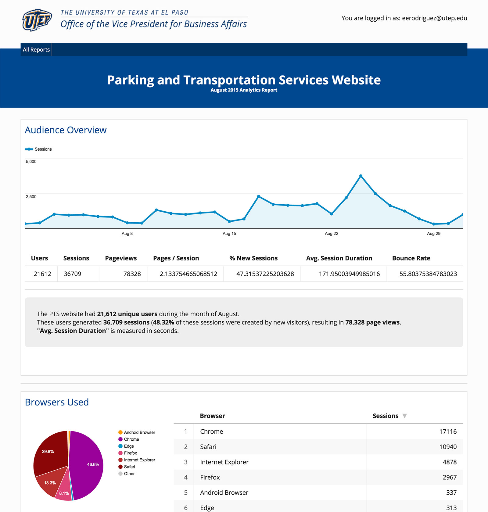

Google Analytics Dashboard

I generate monthly analytics reports of our websites, which I share with my clients (the site owners).
I use the Google “Analytics Core Reporting API”:
https://developers.google.com/analytics/devguides/reporting/core/v3/
To generate the reports, I only need to update the dates in my code, and the report is generated by the API.
Here is the information I include on the reports:
On these reports I show information at very high level, that is all the information I need to share with my clients.
Since this tool is not public, here is a video showing how this application works: